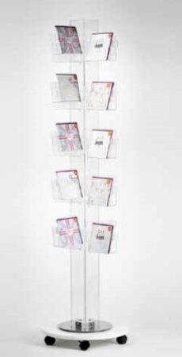

As a manufacturer and designer of these acrylic and perspex products we can customise to meet your needs.
Achieve quality placements and high visibility with additional branding - Saseccan apply vinyl graphics or screen printed logos to all of our media displays . and dump bin products.
Brochure & Literature Stands
Spinners
Brochure Display SpinnerS-01
A stylish brochure spinner to display various sizes of literature and .brochures The modular steel frame of the spinner supports 24 clear acrylic .dispenser pockets Each pocket size can be adjusted to suit either A4, A5 or 2 x DL size brochures by simply removing or moving a clear acrylic slot .(divider (supplied A white finish on the header of the display spinner gives a nice, .clean look An ideal rotating display stand for brochures, greeting cards, .leaflets etc The spinner is supplied on a castor base with lockable wheels so .that it can be moved easily, even when loaded .The castor base is available in either a white or black finish .Overall dimensions 1922mm high x 545mm wide x 545mm deep .Weight approx 34kg The header ring at the top of the spinner can be branded with a .(company logo or message if required (extra cost will apply.
32 Face Brochure CarouselS-02
.Brochure carousel displaying 32 faces of A4 This brochure dispenser has detachable pockets which simply clip .into the main spine The attractive and sturdy display stand is supplied as standard with .a castor base .The 32 face brochure carousel is 1910mm high overall The base at it›s largest diameter is 575mm and the pockets do not .extend outside this Each pocket is 218mm wide x 247mm high x 87mm deep with a central divider giving 2 faces per pocket

48 Face Greetings Card DisplayS-03
.A 48 face greetings card display spinner The card spinner is available with either a white frosted acrylic spine, white base and clear acrylic card pockets or in clear acrylic .throughout Building on the success of our very popular card spinner design, the .48 face card display stand has evolved A white frosted spine and white base enhances the quality and look .of the acrylic card spinner The clear acrylic pockets simply clip into the spine of the card .spinner The clear acrylic pockets clip in and out of the central spine, making .it easy to vary the configurations of the pocket sizes if required The clip in pocket design also means that if a pocket is damaged it ,can be replaced easily and at a low cost .The greeting card pocket capacity in each of the 48 faces is 40mm .The overall height of the card spinner is 1945mm .The base diameter measures 560mm

Spinner On A Castor BaseS-04
CLIP IN POCKET DESIGN ALLOWS YOU TO MIX AND MATCH THE POCKETS The design of this greetings card spinner allows you to simply select the pocket size that suits your cards or postcard. Different .size pockets can even be placed on a single card spinner .The card display pockets simply clip into the central spine This acrylic card carousel is on castors and therefore is easy to .move around your retail area if desired The acrylic card spinner is our best selling model and offers .fantastic value for money The footprint of the card spinner is small in your valuable retail space, yet a large volume cards are able to be displayed. Main :features

Free Rotating InformationS-05
Adjustable pocket sizes for brochures, greeting cards or .timetables on a modular steel frame rotating carousel Each pocket size can be adjusted by simply removing or moving .(a clear acrylic slot divider (supplied .3A4 leaflets/Each of the 24 pockets will hold either A4, A5 or 2 x 1 The rotating literature dispenser is supplied on a castor base with lockable wheels so that it can be moved easily, even when .loaded .Overall dimensions 1922mm high x 545mm wide x 545mm deep .Weight approx 34kg This information carousel is ideal for display many types of literature, but can also be adapted to display posters. please .contact us for details The leaflet stand has a point of sale ring at the top of the carousel which can be branded with a company logo at an extra cost. .Please contact us for a quote

Rotating Brochure StandS-06
The rotating brochure stand has six faces allowing for a large range of information pamphlets, leaflets, greeting cards or .brochures to be displayed on one small footprint The information display spinner is ideal for exhibition display, permanent literature display, reception areas or public information .points .The overall height of this brochure carousel is 1800mm The base of the rotating brochure stand measures 650mm .diameter .Each pocket depth measures 42mm The upright panels of the brochure stand are made in frosted .acrylic with clear acrylic literature pockets
Stands For Cards Or DVDsS-07
An adjustable display stand with basket style pockets which can be divided by plastic clips ( 48 supplied ) to display varying width .of cards or products .This display merchandiser is supplied on a castor base This floorstanding stand is ideal for the display of various size .Greeting cards, Leaflets, CDs, DVDs, Console Games or Videos .(Overall dimensions 515mm (w) x 515mm (d) x 1750mm (h .Each pocket size 420mm (w) x 35mm deep The maximum height for display between each pocket tier is .210mm

A4 Brochure CarouselS-08
.A countertop revolving A4 brochure stand The rotating dispenser has a black turntable base and 16 pockets .for display The capacity of each pocket is 35mm and the internal dimension .is 215mm .The overall height of the brochure dispenser is 745mm This brochure carousel is supplied flat packed for better .transportation Custom sizes and configurations are available on request, please contact us with desired dimensions and quantity required, to obtain .a quotation.